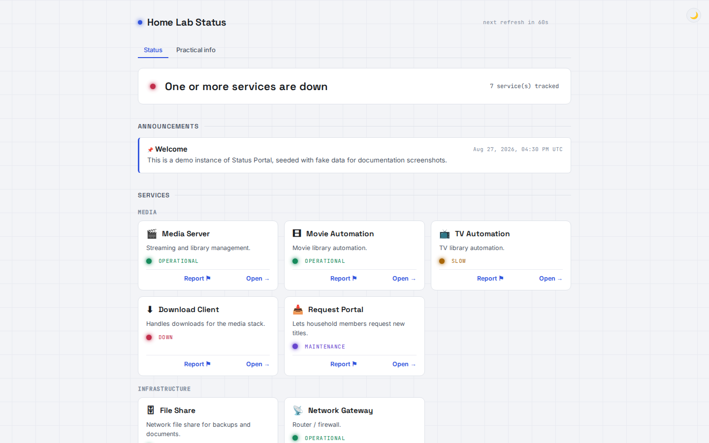
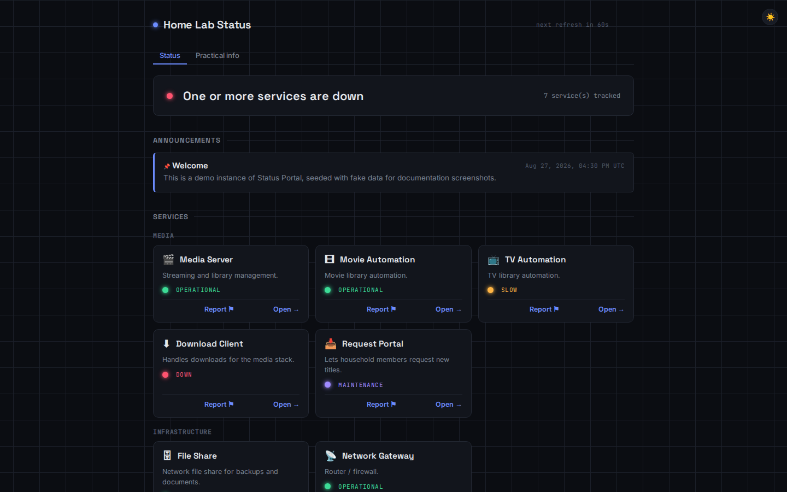
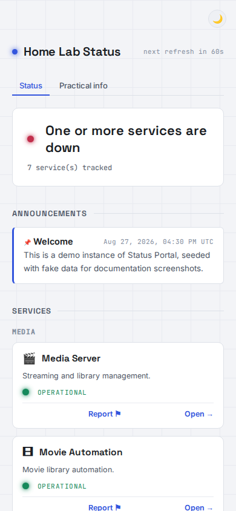
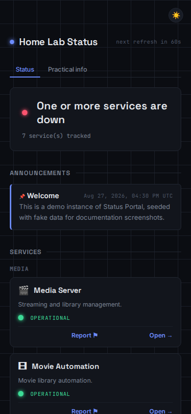
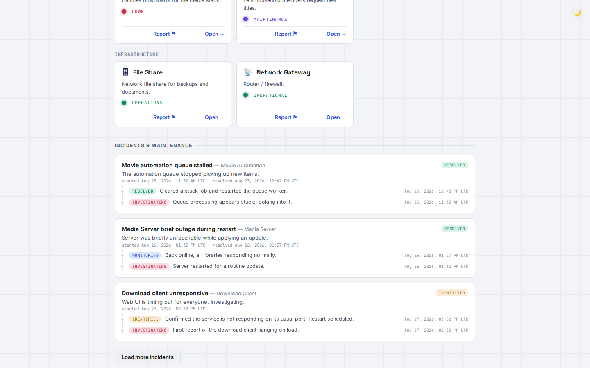
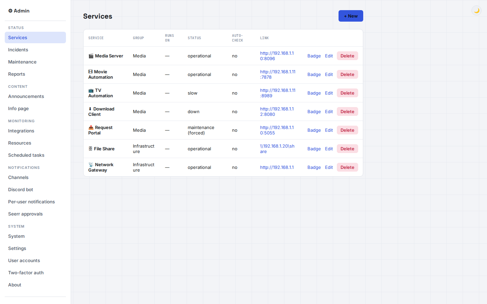
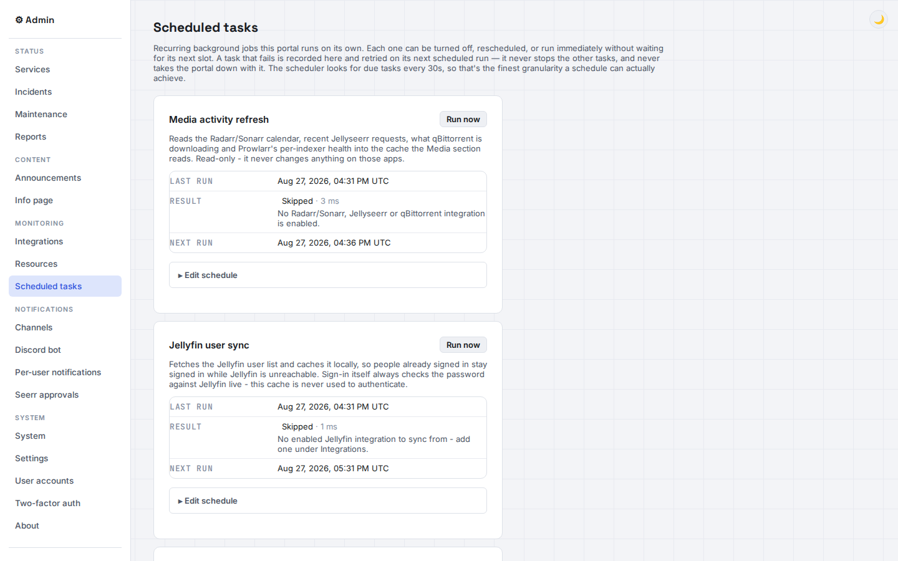
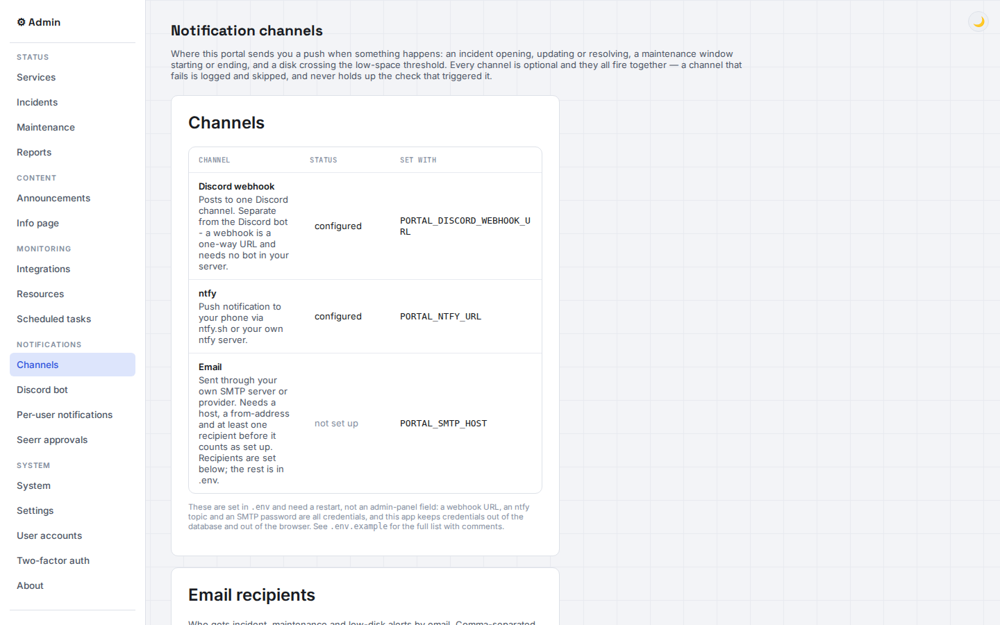
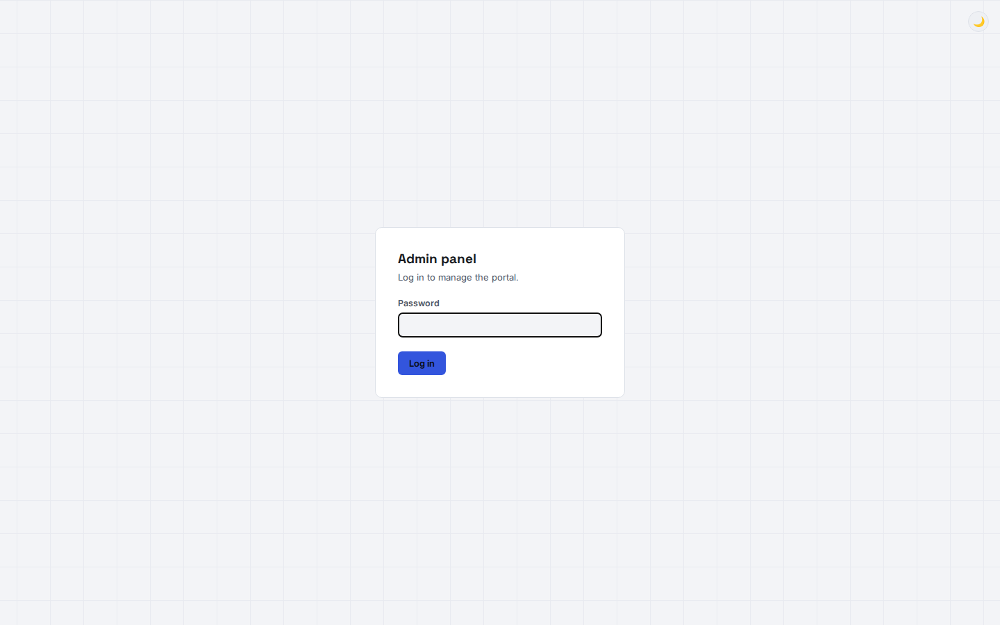
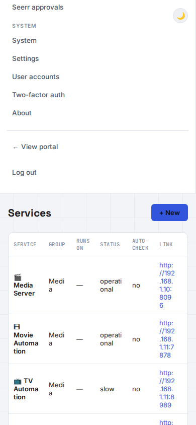

Status Portal
A personal status portal for your home server — no Flask knowledge or HTML editing required.




Built for a home lab, not a SaaS dashboard
Three things most status pages don't even attempt.
Discord bot integration
A real Discord bot — not just a webhook — that keeps a self-editing status message live in a channel and answers a /snapshot slash command with full incident detail on demand. Per-server, per-channel and per-user access controls included.
Hyper-V VM & host controls
Restart or shut down the host machine, or start and stop individual Hyper-V VMs, straight from the admin panel — gated behind step-up two-factor confirmation before anything destructive actually runs.
Self-updating, with rollback
One click in the admin panel, or one update.py command, pulls the latest release, verifies its integrity, and installs it — backing itself up first, so a bad update rolls back instead of taking your portal down.
A full status page, admin panel, and notification system
Nothing here needs a restart to change, and almost nothing needs a code edit.
Automated health checks
Per-service checks with retries, a startup grace period, and a "slow" tier — not just up or down.
Auto-opened incidents
A service going down opens an incident by itself; recovering resolves it. No manual bookkeeping.
Scheduled maintenance
Windows that flip services to "maintenance" and back automatically, covering multiple services at once.
Scheduled tasks
An admin page for every recurring background job the portal runs — enable, reschedule, or run any of them now.
Jellyfin-backed sign-in
Optional visitor accounts backed by your real Jellyfin logins, fully separate from the admin account.
Unified search
Search Jellyfin and Jellyseerr together, and request anything that's missing in one click.
Report a problem
A public form feeds a real admin inbox, with two-way replies per report.
Discord / ntfy / email
Three independent notification channels, all optional, all firing together.
Two-factor auth
TOTP for the admin login, plus step-up confirmation before any destructive action.
Custom branding
Your own logo and favicon from the admin panel — no template to fork.
Uptime & badges
30-day uptime tracking with embeddable SVG badges for any service.
RSS feed
Subscribe to incidents and maintenance windows the old-fashioned way.
Reads live health & activity from the services you already run
Every integration is optional — add only what you run, and each one degrades independently if it's down.
Trademarks belong to their respective projects. Status Portal isn't affiliated with any of them — it just talks to their APIs.
The public page and the admin panel
Real screenshots, not mockups — including the demo data seeded for documentation.








# clone and install git clone https://github.com/Adam4125-officiel/Status-Portal.git cd Status-Portal pip install -r requirements.txt # optional: configure webhooks, ports, etc. cp .env.example .env # run it python app.py
Running in under a minute
Open http://localhost:5000 for the public page and http://localhost:5000/admin to set the admin password on first launch — the database is a single SQLite file, created automatically.
- For continuous or production use, run
python serve_waitress.pyinstead ofapp.py. - Docker is also supported, via the included
Dockerfileanddocker-compose.yml. - Updating later is one click in the admin panel, or
python update.py.